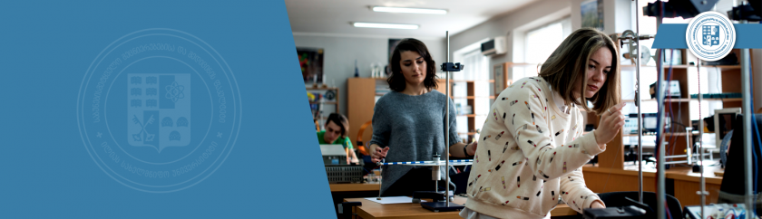
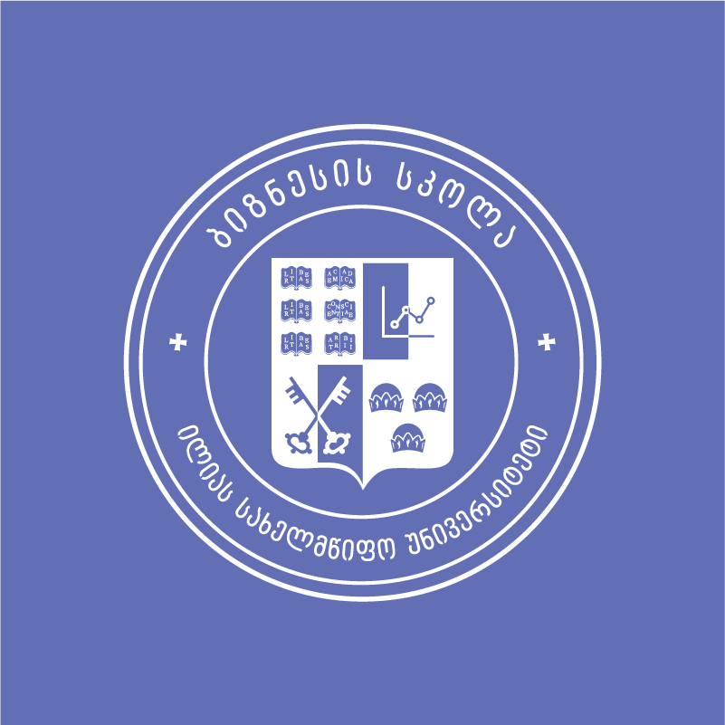
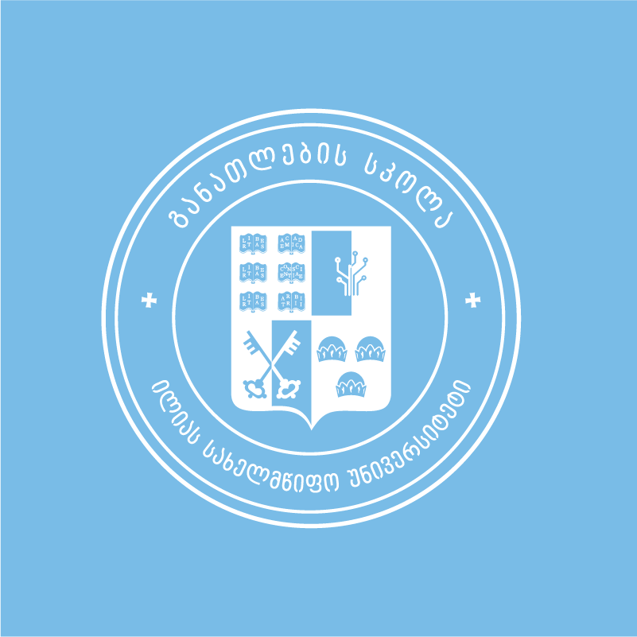
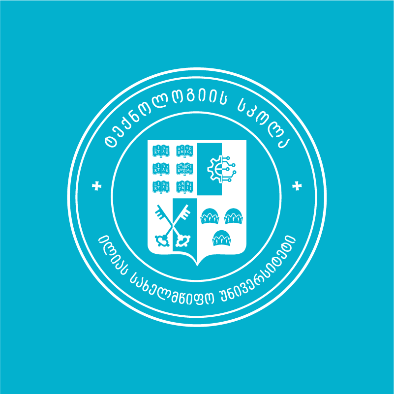
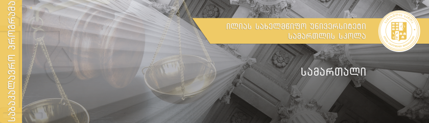

მეცნიერებათა და ხელოვნების ფაკულტეტი ილიას სახელმწიფო უნივერსიტეტის ერთ-ერთი ყველაზე დიდი ფაკულტეტია, რომელიც სასწავლო პროგრამებს სწავლების 3 საფეხურზე: ბაკალავრიატზე, მაგისტრატურასა და დოქტორანტურაზე ახორციელებს. აქ სწავლა საინტერესო იქნება ყველასთვის, ვისაც:
სურს, გაერკვეს თანამედროვე სამყაროში მიმდინარე პოლიტიკურ, სოციალურ და კულტურულ პროცესებში;
სურს, გაეცნოს უცხო ქვეყნების ისტორიას, ენასა და ტრადიციებს;
უყვარს ლიტერატურა, ხელოვნება, თეატრი და მუსიკა;
სურს მომავალში მასწავლებლობა და ახალი თაობის აღზრდაში მონაწილეობა;
ჯერ ვერ გადაუწყვეტია, რა იზიდავს ყველაზე მეტად, და ფართო განათლების მიღება ურჩევნია.
საბუნებისმეტყველო მეცნიერებებისა და მედიცინის ფაკულტეტი

საბუნებისმეტყველო მეცნიერებებისა და მედიცინის ფაკულტეტი წარმოადგენს საქართველოში და რეგიონში საბუნებისმეტყველო მეცნიერებებში და მედიცინის დარგში წამყვან კვლევით ერთეულს.
უახლესი სამეცნიერო და პრაქტიკული ცოდნის გამოყენებით მაღალი დონის სპეციალისტების და მკვლევრების მომზადება საბუნებისმეტყველო, მედიცინისა და მომიჯნავე სპეციალობებში;
ქვეყნის, რეგიონისა და მსოფლიოსთვის მნიშვნელოვანი სამეცნიერო კვლევის განხორციელება, მათ შორის ინდუსტრიის ჩართულობით;
კვლევისა და სწავლების ინტეგრაცია სტუდენტისა და კურსდამთავრებულის დასაქმებისთვის აქტუალური უნარების განვითარების მიზნით;
საუნივერსიტეტო სივრცეში არსებული ცოდნისა და გამოცდილების გამოყენება საზოგადოების კეთილდღეობისა და განვითარებისთვის, დემოკრატიული ღირებულებების ჩამოყალიბებისა და საქართველოს ევროინტეგრაციის ხელშეწყობისათვის.
ბიზნესის, ტექნოლოგიისა და განათლების ფაკულტეტი



ბიზნესის, ტექნოლოგიის და განათლების ფაკულტეტი 2019 წელს შეიქმნა ილიას სახელმწიფო უნივერსიტეტში.ფაკულტეტის მიზანია სამი მიმართულების – ბიზნესის, ტექნოლოგიისა და განათლების – სინერგიით იმგვარი საუნივერსიტეტო პროგრამები შეიმუშაოს, რომელთა გამოყენებითი პოტენციალი ემსახურება საზოგადოებრივი კეთილდღეობისა და საზოგადოებაში მიმდინარე პროცესების მართვისა და კვლევის საფუძვლების შექმნას. ბიზნესის, ტექნოლოგიის და განათლების ფაკულტეტი პროგრამების არსებული კომპოზიციით, ადამიანური და ტექნოლოგიური რესურსებით, სამეცნიერო-კვლევითი პოტენციალით, თანამედროვე ინფრასტრუქტურითა და საერთაშორისო პარტნიორებით იძლევა შესაძლებლობას, მოამზადოს:
ბიზნესის ადმინისტრირების ისეთი სპეციალისტები, რომლებსაც ექნებათ საჭირო უნარები და შესაბამისი ტექნოლოგიების ცოდნა, რათა უპასუხონ თანამედროვე გამოწვევებს სწრაფად ცვალებად გარემოში და იყვნენ მოთხოვნადი შრომით ბაზარზე;
საინჟინრო და ტექნოლოგიური მიმართულებების ისეთი სპეციალისტები, რომლებსაც ექნებათ ადგილობრივ და საერთაშორისო ინდუსტრიასთან მუშაობის გამოცდილება, შესწავლილი ექნებათ ბიზნესისა და განათლების მიმათულებები და, შესაბამისად, კონკურენტუნარიანი იქნებიან არა მხოლოდ ქართულ, არამედ საერთაშორისო შრომით ბაზარზე;
განათლების სფეროს წარმატებული სპეციალისტები და მკვლევრები, რომლებიც შეძლებენ თანამედროვე, საერთაშორისო და ეროვნული მოთხოვნების შესაბამისი ინოვაციური და მეცნიერულად დასაბუთებული ცოდნის შექმნასა და გავრცელებას; ასევე განათლების კვლევებსა და აკადემიურ პროგრამებში ინტერდისციპლინარული მიდგომების გამოყენებით ტექნოლოგიებისა და ბიზნესის მიმართულებებთან სინქრონიზაციას და სხვა დარგებთან კავშირების გაძლიერებას.
სამართლის სკოლა

სამართლის სკოლა ახორციელებს სამართლის საბაკალავრო, კერძო (ბიზნე) სამართლის სამაგისტრო, საჯარო სამართლისა და პოლიტიკის და სისხლის სამართლის სამაგისტრო პროგრამებს.
სამართლის საბაკალავრო პროგრამის მიზანია:მოამზადოს კონკურეტუნარიანი სპეციალისტი სამართლის დარგში, რომელსაც/რომელიც:
ექნება ფართო ცოდნა სამართლის არსის, ძირითადი პრინციპების, ეროვნული სისტემის თავისებურებების, ხოლო საჯარო, სისხლის, კერძო და საერთაშორისო სამართლის ძირითადი საკითხების სპეციფიკის შესახებ;
შეძლებს სამართლებრივი პრობლემების იდენტიფიცირება ს, მათ შეფასებას და პრობლემის გადაწყეტისთვის საჭირო იურიდიული მოქმედების განსაზღვრას წინასწარ განსაზღვრული მითითებების შესაბამისად;
შეძლებს სპეციალისტებთან და არასპეციალისტებთან შესაბამისი ზეპირი და წერითი ფორმით კომუნიკაციას აკადემიური კეთილსინდისიერების პრინციპების დაცვით;
შეძლებს მოქმედებას იურისტის პროფესიული ქცევის წესებისა და ადამიანის ძირითადი უფლებების პატივისცემის გზით.